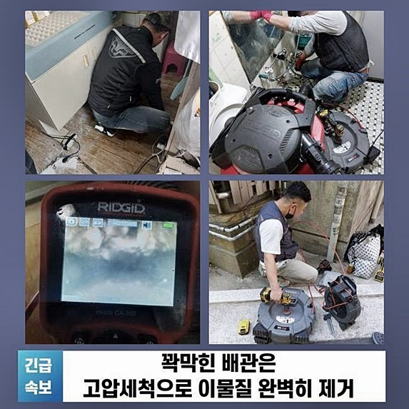
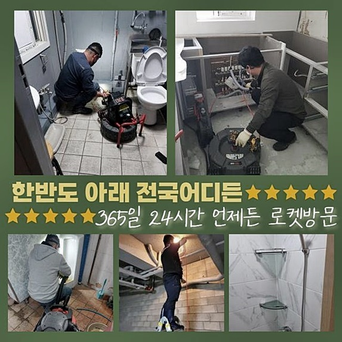
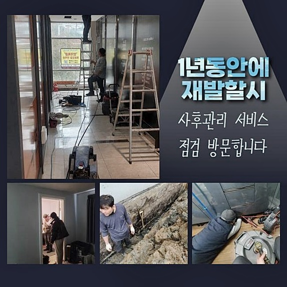
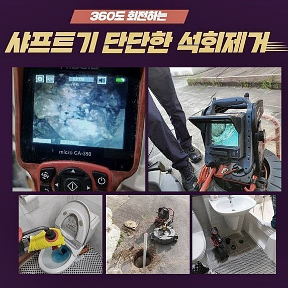
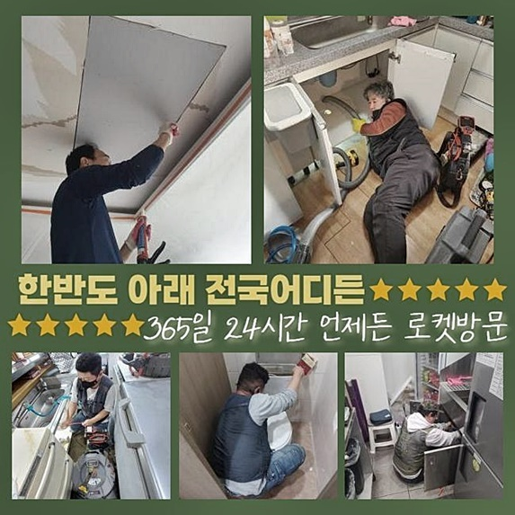
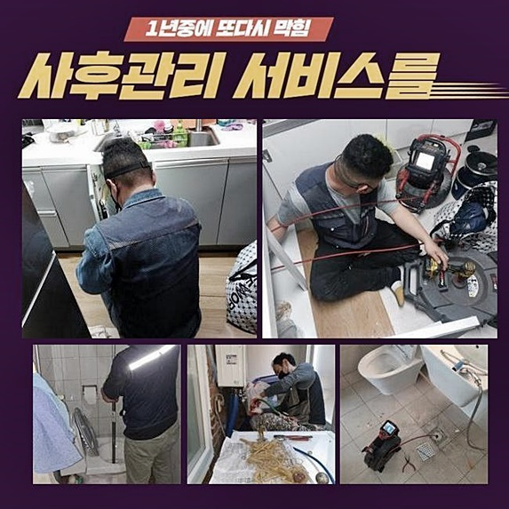

🏠 포승읍대변기막힘 지산동 하수구뚫는업체 설비
용인 변기막힘 전문 시공 후기

📋 작업 개요
- 위치: 용인
- 서비스 유형: 변기막힘, 하수구막힘, 배관막힘, 뚫는업체, 배관청소, 고압세척, 악취차단
- 작업 일시: 2024. 6. 24. 11:28
- 업체명: 하수구수사대 (010-5615-2118)
🔍 문제 상황
포승읍대변기막힘 지산동 하수구뚫는업체 설비
욕실이라는 장소는 통상적으로 이용하는 구역 가운데 수돗물 설비를 제일 많이 소비하는 곳입니다
내부의 상황을 보면 바닥의 그레이팅 시설 개수대와 같이 다량의 물이 필요한 설비가 장착된 점을 알아차릴 수 있습니다
다양한 수도설비가 있는 화장실 특성상 내부 하수구가 봉쇄되는 사건이 자주 발생될 수 밖엔 없는 지점이라고 할 수 있는데요
예상치 못하게 문득 물 내려감이 중지됐는데 물길이 회복될 낌새가 없어서 저희를 찾아주셨죠
작업지에 당도하고서 막힘의 정도에 대해서 검사를 시행해 봤더니 배관 겉에서 물이 아래에서 콱 막혀서 부유하는 중이었습니다
수돗물을 틀고 한참 지나면 배수의 속도가 저하되는 모습을 보긴 했는데 완전히 마비되어 조금도 빠지지 않는 정도는 얼마 전에 시작된 증상같다 하셨어요
화장실에 부착된 세면대는 세수하며 묵은 때나 털과 같은 물질들이 물과 섞여 내려가서 막혀버릴 가능성이 다분해요
욕실 자체를 쓰기가 한계가 있는 부분이어서 얼른 고장난 측면을 관통해 주는 작업에 깊이 몰두해 보았습니다
본질적으로 장치를 접촉시키는 게 아니라 배관 자체의 현상들을 낱낱이 파헤치면서 업무 계획을 세웁니다
세면시설에 달린 파이프가 벽 안으로 깔려있는 상태로 보였습니다

🔎 원인 분석
💡 전문가 진단: 정밀 진단 장비를 사용하여 슬러지의 고착 여부를 판명하고 타격/세척 작업을 실시했습니다.
눈으로 감별되는 부분에는 배수로가 별도로 감지되지는 않은 부분이라 바닥의 해체와 같은 별도의 업무가 요구될 수 있다는 사실을 넌지시 알려드렸습니다
건물의 연식에 따라서 구조물의 배치는 차이점이 보입니다
비단 몇 년 전에 착공된 신축 건물의 경우라면 배수로들이 마감재 안으로 묻혀있을 떄가 많은데 이는 냄새차단도 해주면서 더불어 외형적으로도 완성도를 높일 수 있습니다!
어떤 오류가 내장됐는지를 판단을 내리기 위해서는 세면대 물마개를 들어내 준 다음에 디테일한 검토를 해보겠습니다
오늘 본 곳은 건축물이 존속했던 기간이 매우 예전인 문제는 아니었기에 아무래도 파이프가 엄청나게 부실하지는 않았습니다!
해당 시설이 처음 세워진 지 몇 십년이 경과했다면 부품까지도 녹슬고 부식해서 조금의 파장이 있어도 겉부분의 마개까지도 부서지고 이탈되는 경우도 있어요
물길이 트이지 않은 증세가 장기화될 시에는 연결되어 있는 부품까지도 비정상적으로 작동하는 일로 나아가는 경우도 비일비재합니다
내측에 끼인 물질에 따라서 달라질 수 있겠지만 만약에 음식쓰레기들로 봉쇄된 예시라면 내측에 계속 머무르면서 균이 생기면서 불쾌한 냄새분자를 퍼뜨리기도 해요
이 문제도 별도로 처리해야 하며 배관의 종류나 모양에 따라서 부작용이 초래될 때가 많으니 문제가 없을만큼 철저한 검사를 해보아야 할 것입니다
내부를 세밀하게 평가해 보니 냄새유입을 막는 p트랩으로 달려있는 게 보였고 해당 집 안에서 조치를 취할 수가 없다면 아랫세대의 허락을 구한 뒤 천장을 뜯어내는 작업이 필수조건일 때가 있습니다
의뢰해주신 분의 주거지 내부적으로 완전히 매듭을 지을 수 있도록 열성을 다할 것이며 안쪽의 상황에 대해서는 검사 기기를 동원하여 판단을 거쳐야 합니다

🔧 작업 과정
세면기 똑딱이 버튼을 꺼내보니 여러 오염물질들이 빈 공간없이 메우고 있었네요
세수나 양치를 하면서 배출된 각질층과 비누덩어리같은 것들이 물과 함께 쓸려가면서 결국 여백없이 채워진 거였죠
팝업 내측에 이물질이 과다하게 집적되면 아예 새것으로 바꾼다거나 가볍게 솔질만 해줘도 사태가 개선됩니다
세면대 내의 수분이 나아가지 못한다면 우선은 폽업의 근처가 저지된 상황과 전체 관로에 불순물이 쌓인 경우로 나눠 생각해볼 수 있어요
깊숙한 내면까지도 생활찌꺼기가 도달한 형태로 관측됐던 까닭에 세세한 클렌징 단계가 필수조건이다 싶더라고요
밑집으로 이동하여 천장 방면으로 뚫어야 할 까다로운 일은 아니었기에 머무른 장소 내에서 뚫어나가는 것만으로도 얼마든지 걸림돌들이 개선되겠다는 판단 내리게 됐네요
실질적인 업무를 해봐야 자세히 인지할 수 있겠지만 일단 관찰로 얻은 정보로는 하나의 가구 안에서 통수가 이루어질 수 있을 듯 했어요
밝혀진 사항들은 즉각적으로 고객님께도 설명드리고 있습니다
세부적인 배관청소 기기로 배관 내 흐름 장애를 빚는 노폐물들을 정화해 나가야 합니다
오염물질이 축적된 양이 굉장했으므로 진득하게 실행을 반복해줘야 했네요
현장 조건별로 작업 절대적인 시간의 경우는 달라지니 고정치는 없습니다
노폐물이 돌덩이처럼 말라붙어있거나 양이 많아서 처리가 힘든 경우는 마감에 이르는 시간이 증가하기도 합니다
순차적으로 표면부터 붙어있는 이물질들을 차분하게 세심하게 닦아나가면 결국 깨끗해 집니다
샤프트 장치와 배관전용 카메라는 매끈한 로프 형태로 조성되어 있으므로 동시에 들어가서 실시간 중개를 하며 디테일링 청소가 가능합니다
어느정도 잔량이 있는지 순간순간 파악해가며 조치할 수 있으니 답답하게 중단된 측면을 세심하고 정확도 높게 세척할 수 있는 것입니다
통행불능의 상태를 낳던 수많은 것들이 모조리 자취를 감췄습니다
이전에는 자리를 차지했던 가로막는 물질들이 남아있지 않으므로 생활용수가 활발하게 거침없이 배수되어 버립니다
세면대에서 수도꼭지를 돌려서 배수테스트를 진행하면서 별다른 하자는 없는지 반복적으로 검사해 준 후에 안심을 드리고 있으며 새로운 문제점이 감지될 때에도 AS서비스 역시도 책임감있게 보장하고 있답니다


✅ 작업 완료
배관의 근처에 더러운 게 많았고 산화한 곳이 많았기에 말끔하게 닦아내 드리고 위생적으로 마무리해요
장소의 특성을 반영해 작업 절차가 변동이 있으므로 저희 업체는 사전 견적만으로 최종가를 구체적으로 안내할 수는 없어요
건물의 특성을 분석한 후에 내시경기기까지 도입하여 어떤 작업이 필요한지를 가닥을 잡은 후에 세부적인 가격을 제시해 드릴 수 있답니다
혹시 다른 의문이 있으시면 정비하는 과정이라도 자유롭게 질문해 주세요
노하우가 많은 전문가가 세부적 과정에 대한 설명을 지속적으로 보고를 하며 내부에 설립된 시설물의 하자나 오류가 드러나고 다른 기능의 파이프에 이슈가 도래하게 되더라도에도 곧장 대처를 해드리니 마음을 놓으셔도 됩니다




⚠️ 하수구 배관 막힘 예방 및 관리 가이드
- ✅ 머리카락, 비닐, 물티슈 등 물에 분해되지 않는 이물질은 하수구 유입을 절대 금지해 주세요.
- ✅ 하수구 거름망을 씌우고 모여진 이물질은 주기적으로 쓰레기통에 바로 비워주셔야 합니다.
- ✅ 배관 노후가 심할 경우 이물질이 더 쉽게 걸리므로 주기적인 배관 세척(고압세척 등)을 권장합니다.
- ✅ 작업 후 1년 이내 재발 시 하수구수사대에서 무상 A/S 보증 서비스를 제공합니다.
💡 핵심 정리
- 확실한 장비 작업(내시경 점검 및 샤프트 스케일링)으로 원인을 뿌리 뽑습니다.
- 작업 후 1년 이내에 동일한 부위 재발 시 100% 무상 A/S 서비스를 보장합니다.
- 서울 · 경기 · 인천 전 지역에 24시간 언제든 긴급 출동할 수 있도록 항시 대기 중입니다.
❓ 자주 묻는 질문 (FAQ)
🚨 용인 변기막힘 문제로 고민이신가요?
정확한 원인 진단과 확실한 시공으로 재발 없는 해결을 약속드립니다.
24시간 긴급 출동 | 서울 · 경기 · 인천 전지역 | 1년 내 재발 시 무상 A/S